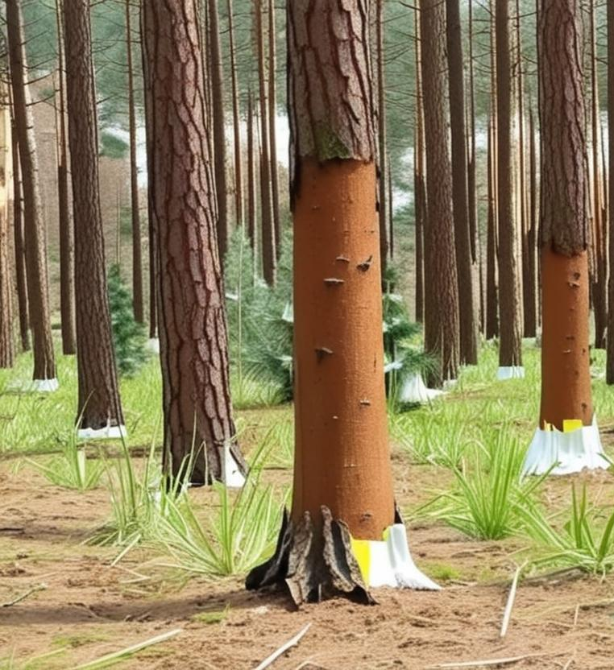
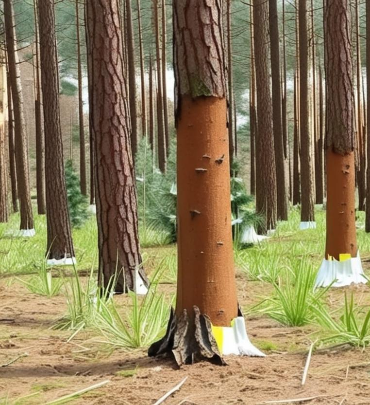
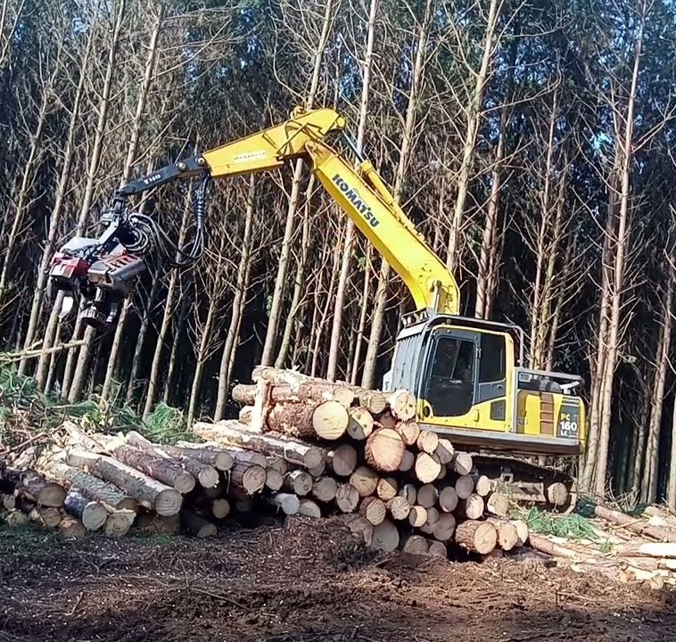
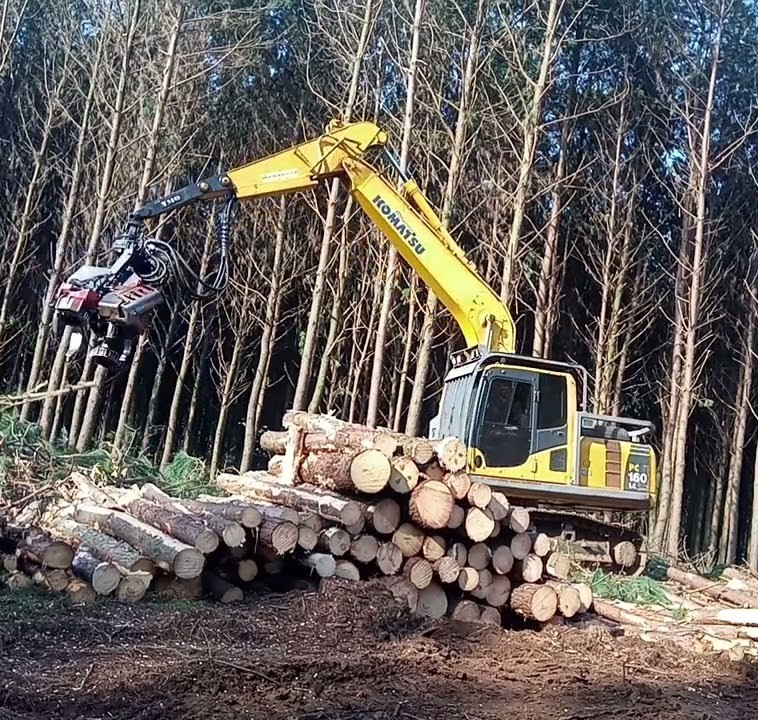

ㅤNa região Sudoeste do Paraná, especialmente em Clevelândia, a silvicultura, com o foco no cultivo de Pinus, tem se consolidado como uma atividade econômica e ambiental de grande relevância. Empresas e produtores locais investem no plantio dessas árvores devido à sua adaptabilidade ao clima e solo da região, bem como ao seu rápido ciclo de crescimento, que as torna ideais para a produção de madeira. O Pinus é largamente utilizado na fabricação de diversos produtos, desde madeira serrada e painéis compensados até celulose e energia, gerando empregos e impulsionando a cadeia produtiva florestal na comunidade.
ㅤAs plantações de Pinus em Clevelândia não só contribuem para a economia local, mas também desempenham um papel importante na sustentabilidade. Essas florestas atuam no sequestro de carbono, auxiliando na redução dos gases de efeito estufa, e ajudam a proteger o solo da erosão. O manejo florestal sustentável é crucial para garantir que esses benefícios sejam maximizados, ao mesmo tempo em que se busca a conservação da biodiversidade e o uso responsável dos recursos naturais da região. A presença do Pinus é um indicativo do potencial florestal e da busca por alternativas produtivas que conciliam desenvolvimento econômico e cuidado ambiental.
A seguir, imagens do Cultivo do Pinus:

 

A seguir, imagens sobre a Produção do Compensado:
 


Todas as imagens foram registradas pela autora, durante a visita tecnica realizada na Madereira 5 Irmãos, localizada em Clevelândia Paraná.